感謝您對「自由軟體鑄造場」的支持與愛護，十多年來「自由軟體鑄造場」受中央研究院支持，並在資訊科學研究所以及資訊科技創新研究中心執行，現已完成階段性的任務。 原網站預計持續維運至 2021年底，網站內容基本上不會再更動。本網站由 Denny Huang 備份封存。
也紀念我們永遠的朋友 李士傑先生（Shih-Chieh Ilya Li）。
也紀念我們永遠的朋友 李士傑先生（Shih-Chieh Ilya Li）。
你的老遊戲總管 D-Fend Reloaded
建立日期 2011-04-11 14:51 最近更新在 2011-04-12 11:53
在過去幾年間，筆者介紹過若干開放源碼的遊戲相關專案，顯示出開放源碼在促進軟硬體進步的娛樂產業中沒有缺席。本文要介紹的是開發已超過三年的開放源碼專案 － D-Fend Reloaded。這個軟體成功地將不同的遊戲解決方案結合在一起，不僅僅能在 Windows 運行，還能透過 Wine 環境執行，因此非 Windows 的遊戲玩家也可以享受 D-Fend Reloaded 帶來的便利。D-Fend Reloaded 一如其名，在許多方面都是延續 D-Fend 而來的。D-Fend 是 2006 年以前最著名的 DOSBox 圖形介面前端 (GUI frontend)。2006 年後原作者因故宣告停止開發及維護，但此時 D-Fend 已經大大影響了許多不同的 DOSBox 圖形介面前端軟體的設計方向。
DOSBox 是另一個開放源碼專案，目的是要在不同的平台上，模擬出當年的 DOS 環境。這個專案的主要目標是為了要讓使用者能夠玩 DOS 時代的遊戲。但是隨著模擬越來越完整，就算要執行倚天中文或者 Windows 3.1 版也沒問題。更好的是 DOSBox 讓 DOS 環境的記憶體管理、音效卡配置都大幅簡化，如今使用 DOSBox 已經不用像當年使用 DOS 那樣，痛苦地從 config.sys 及 autoexec.bat 裡面壓榨記憶體了。
可惜 DOSBox 對現今新一代電腦使用者來說，仍然充斥著挑戰：許多使用者早已習慣圖形介面，看到文字介面時不知從何下手。專門販賣老遊戲的網站 Good Old Games 也運用了 DOSBox 專案的成果，預先設置好許多老遊戲的 DOSBox 配置，讓玩家可以在現代作業系統上，輕鬆地安裝老遊戲。除此之外，各種平台上也陸續出現各式各樣的圖形介面前端，例如前述 Windows 平台上的 D-Fend，另外還有 Mac OS X 平台上的 boxer、Tcl/Tk 的 DOSBoxGui、KDE3/Qt3 的 DboxFE、Qt4 的 GR-lida 等，都是很著名的專案（註一）。
在 D-Fend 結束維護後的一年左右，一個以繼承 D-Fend 為出發點的開放源碼專案，D-Fend Reloaded，釋出了第一個公開測試版。D-Fend Reloaded 能夠完全與 D-Fend 相容，文件上寫著「你可以把 D-Fend 的執行檔直接換成 D-Fend Reloaded 的執行檔，其他東西都不用動」。隨著 D-Fend Reloaded 繼續開發，不只是修正瑕疵，還持續添加更多的功能，並與各種開放源碼計畫整合。
也許因為「D-Fend Reloaded」這個名字，讓許多人以為這不過就是另一個「DOS 時代老遊戲的東西」。對於沒怎麼接觸那個年代遊戲的朋友，自然對 D-Fend Reloaded 也就不認識。然而現在的 D-Fend Reloaded 已成為相當完整的遊戲管理解決方案，不但可以（透過 Wine）跨平台，支援「可攜式安裝」，提供 PortableApps.com 格式的可攜式套件，更可以整合各種遊戲主機模擬器及 Windows 平台的遊戲。以下就讓我們來看看這些有趣的功能。
為了避免在奇怪的地方遇到預料外的瑕疵，例如某些 Windows 的鍵盤驅動程式會使得 DOSBox 內的鍵盤配置發生異常。D-Fend Reloaded 雖然有繁體中文介面，筆者建議選擇用英文介面。本文中的描述仍然會以中文為主，但是都採用筆者自己的慣用譯法，跟實際的正體中文介面可能有所不同，這邊要請讀者們留意翻譯上的差異。另外筆者其實都是設定成全螢幕執行遊戲，但是為了抓圖說明，所以暫時會切換成視窗模式。
遊戲管理
DboxFE Windows 7 新增了一個「遊戲總管」（遊樂場）的功能，會陳列使用者所安裝的遊戲，以便玩遊戲或更新等。但是這個功能需要遊戲開發者／發行者的配合，不是所有安裝的遊戲都會列進去（老遊戲就不要想了），而且有時候會出現一些不大對勁的現象，例如同一個遊戲列出好幾個等等。
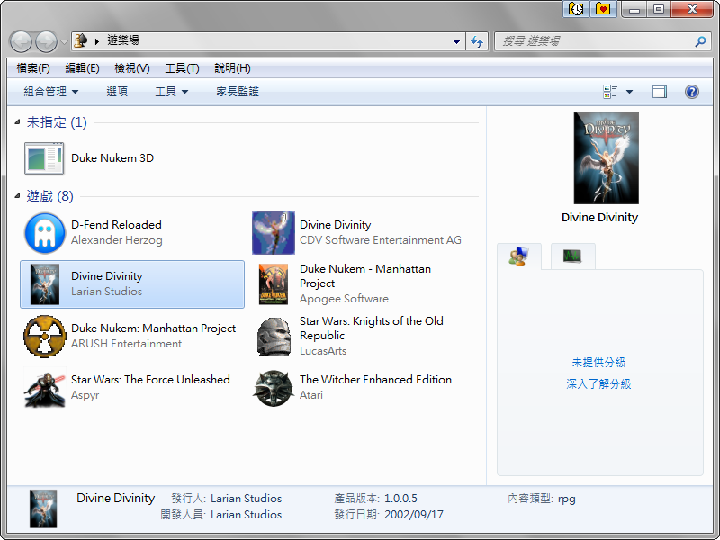
▲ 圖1 Windows 7 遊樂場
這樣的功能想法很好，至少讓筆者可以清掉一些桌面上的捷徑，要是能夠方便自己管理這些遊戲，那就更好了。用過 D-Fend Reloaded 後，「遊樂場」就沒有機會出場了，因為 D-Fend Reloaded 更好用！
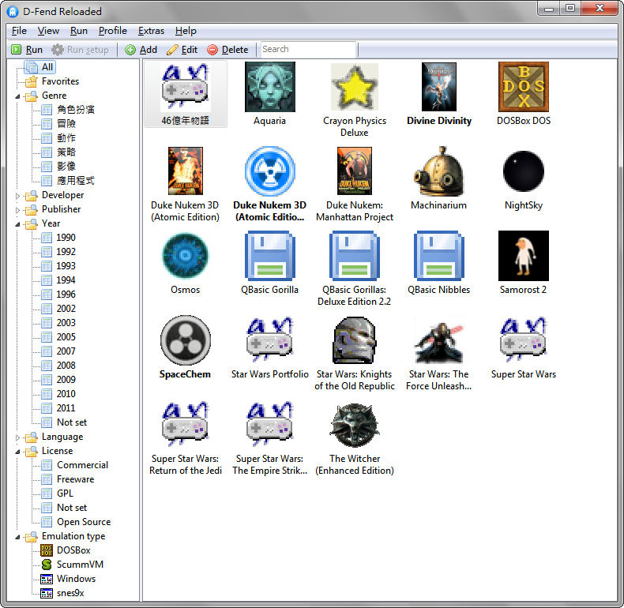
▲ 圖2 D-Fend Reloaded 的遊戲清單（圖示）檢視
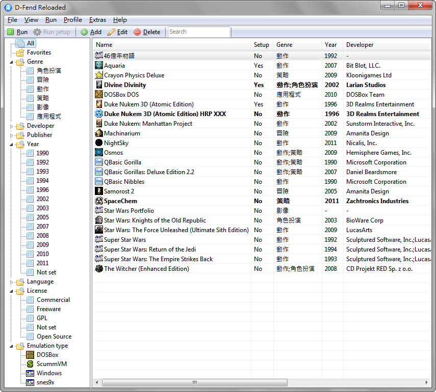
▲ 圖3 D-Fend Reloaded 的遊戲清單（報表）檢視
D-Fend Reloaded 除了一樣可以直接用搜尋框來尋找遊戲外，還多了一個「我的最愛」，另外也能用遊戲類型、開發人員、發行人、發行年份、遊戲語言、遊戲授權方式、遊戲平台等條件來分別檢索。如果你覺得這樣還不夠，D-Fend Reloaded 甚至可以讓你自訂分類的依據。
為了要能夠分類，D-Fend Reloaded 必須要知道各個遊戲的資料。這些資料可以手動維護，但是 D-Fend Reloaded 內建直接從 MobyGames 下載資料的功能，你只要給個名稱片段，就能夠輕鬆下載相關的資訊，就連遊戲的相關圖片也能一起抓下來。要是很不巧地，你的遊戲在 MobyGames 上面沒有資料，也別擔心，因為 D-Fend Reloaded 還可以讓你很方便地用 SquakeNet.Com、TheLegacy、Kultpower 、Google、Wikipedia 等網站來搜尋遊戲資訊。如果你覺得預設的這些資訊欄位還不夠（例如你想要註明遊戲的明確版本編號），D-Fend Reloaded 還提供自訂欄位的功能，相當貼心。
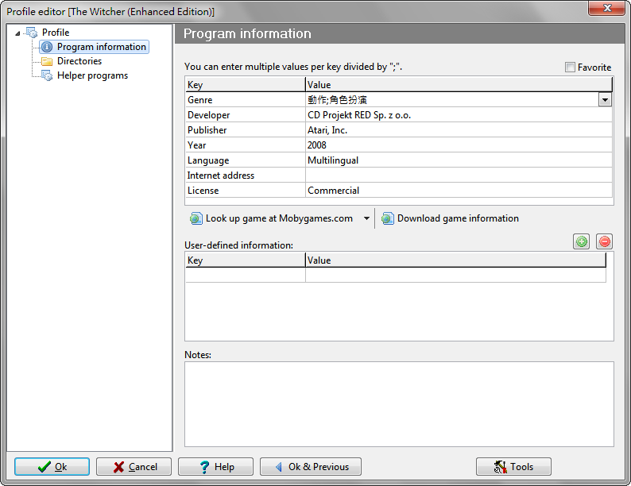
▲ 圖4 D-Fend Reloaded 的程式（遊戲）資訊編輯畫面
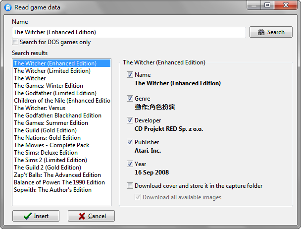
▲ 圖5 D-Fend Reloaded 的讀取（下載）遊戲資訊畫面
抓下來的資料中，可能會有遊戲發行的「日期」，但是其實管理時只需要用到「年份」，所以這邊需要自己修改一下。遊戲類型、遊戲語言、遊戲授權方式等三項資訊可以用中文來描述。但是你一定不會想要每次下載資料後就手動修改，所以請善用程式設定中的「遊戲清單的非英語翻譯」功能（這個選項要在進階模式中才會出現），這樣 D-Fend Reloaded 就會自動幫你翻譯。
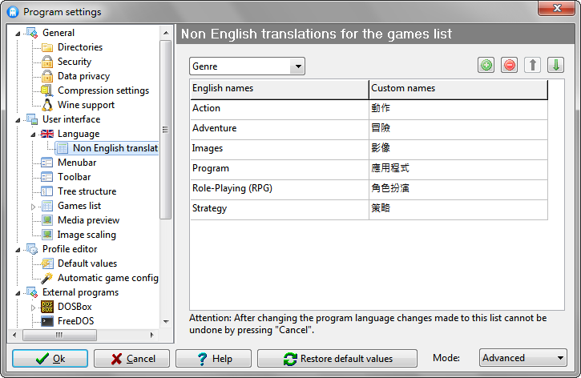
▲ 圖6 D-Fend Reloaded 設定非英文資訊的自動翻譯功能
Windows 遊戲
D-Fend Reloaded 可以用來管理 Windows 平台的遊戲：新增設定檔的時候，模擬類型選擇 Windows 遊戲（沒錯，雖然此時不是要「模擬」），然後一樣選擇遊戲的執行檔即可。執行檔路徑不用以引號「"……"」夾住，如果執行檔需要加上參數，則要另外填在程式參數的欄位，這跟 Windows 捷徑的寫法不大一樣，請注意。另外也可以在程式設定中，設定執行 Windows 遊戲時，自動把 D-Fend Reloaded 最小化（這個選項要在進階模式中才會出現）。
DOS 遊戲
DOS 遊戲就不用說了，D-Fend Reloaded 當然是支援的，特別之處在於 D-Fend Reloaded 內建上千個預先定義好的「模版」，當你要加入遊戲的時候，它會自動判斷你加入的是什麼遊戲，看看有沒有可以直接套用的模版。
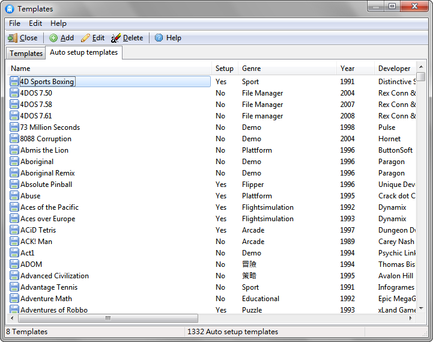
▲ 圖7 D-Fend Reloaded 內建的自動設定模版
除了根據執行檔檔名來判斷外，D-Fend Reloaded 也可以直接「匯入」壓縮檔，並且從中根據指定的檔名，判斷其中是否含有設定或安裝資訊，並據此完成自動操作。
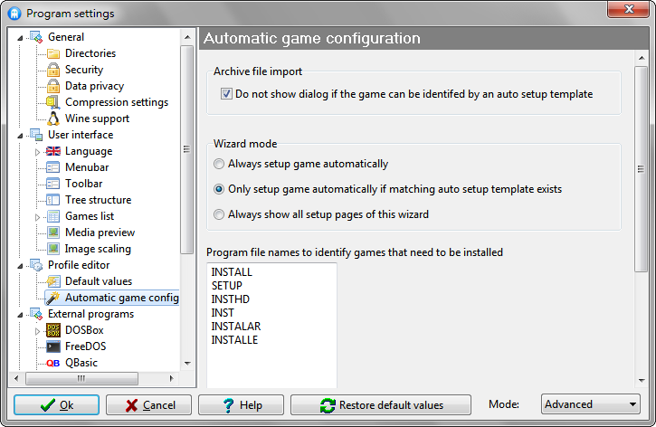
▲ 圖8 D-Fend Reloaded 的自動遊戲組態配置畫面
如果你手上的 DOS 遊戲是原始磁片或光碟（或者是它們的映像檔／壓縮檔），也可以用 D-Fend Reloaded 選擇要從來源安裝，這時 D-Fend Reloaded 會先以預設環境來執行安裝程式，待安裝完成後再建立遊戲設定檔。
如果你安裝 D-Fend Reloaded 的時候選擇「設定檔存放在使用者目錄」（這是 Windows 7 的建議選項），D-Fend Reloaded 預設會把 %UserProfile%\D-Fend Reloaded\VirtualHD\ 掛載成 C 磁碟機，所以你應該把遊戲解成此路徑中的子目錄。
除了模版外，D-Fend Reloaded 還內建「遊戲存檔修改」資料庫，可以用來作弊，是修改軟體外的另一個選擇。這個資料庫跟自動設定模版一樣，可以線上檢查更新及下載。（當然你也可以使用開放源碼的 Cheat Engine 來「修改」這些遊戲。）
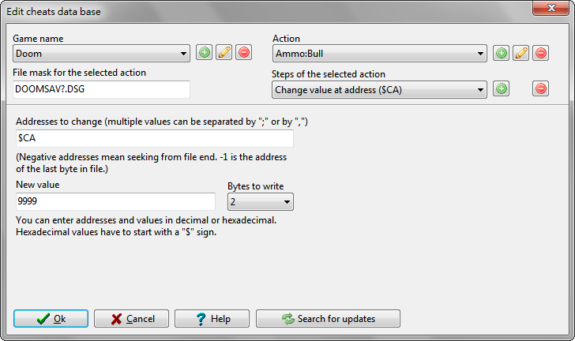
▲ 圖9 D-Fend Reloaded 內建的遊戲存檔修改（作弊）資料庫
把遊戲檔案放到 %UserProfile%\D-Fend Reloaded\VirtualHD\ 目錄下還有許多管理上的好處，例如可以一次把很多遊戲放進去，然後用「掃描新遊戲」的功能迅速建立一堆遊戲設定檔，也可以把這些遊戲「匯出」成套件 ─ 如此在其他電腦上也可以輕易匯入 D-Fend Reloaded，免去重新安裝、設定的步驟。事實上 D-Fend Reloaded 的網站上就有提供一大堆預先準備好的「套件」，多是免費版、試玩版、展示版、共享版的遊戲，也可以從 D-Fend Reloaded 當中直接選擇下載，還怕沒有遊戲玩嗎？
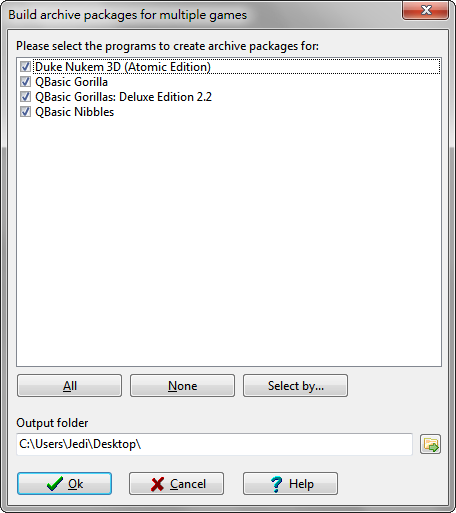
▲ 圖10 用 D-Fend Reloaded 建立遊戲套件

▲ 圖11 從 D-Fend Reloaded 下載遊戲套件
QuickBASIC 遊戲
說到 DOS 遊戲，還記得當年 DOS 裡面附了一套 QuickBASIC 嗎？就算你不記得，總知道「大猩猩」(Gorilla) 跟「貪食蛇」(Nibbles) 這兩個歷久彌新的經典遊戲吧？這兩個遊戲當年都是隨著 QuickBASIC 一起附在 DOS 中的遊戲，遊戲本身是 .BAS 的源碼，要用 QuickBASIC 載入後執行。
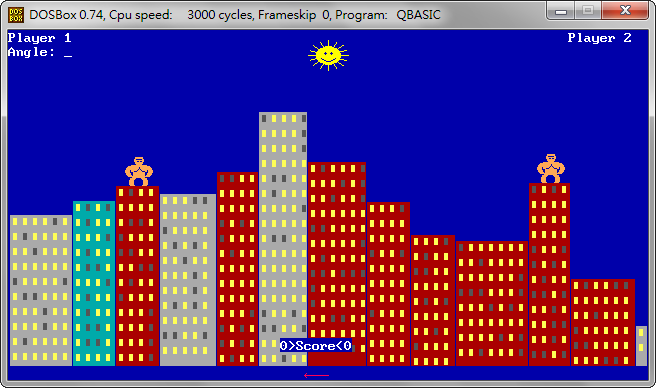
▲ 圖12 在 DOSBox 中執行的「大猩猩」(Gorilla)
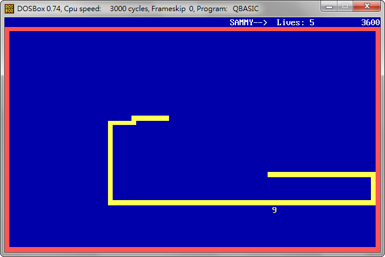
▲ 圖13 在 DOSBox 中執行的「貪食蛇」(Nibbles)
按照 DOSBox 的標準用法，你必須在 DOSBox 內手動執行 QuickBASIC 的整合開發環境，載入對應的 .BAS 源碼再執行。D-Fend Reloaded 將這樣的程序予以簡化，只要事先指定 QBasic 的程式路徑，建立遊戲設定檔時就可以直接指定 .BAS 源碼檔案為遊戲執行檔，之後 D-Fend Reloaded 就會自動執行 QuickBASIC、載入 .BAS 源碼、執行，一氣呵成。
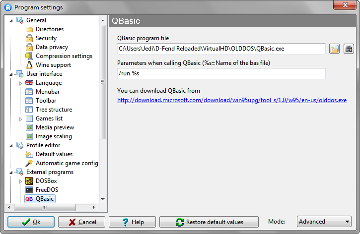
▲ 圖14 D-Fend Reloaded 可整合 QuickBASIC
QuickBASIC 可以從微軟的技術支援網站「CD-ROM Extras for Microsoft Windows 95 Upgrade」下載 Olddos.exe，這是個自我解壓檔，建議解壓縮到 %UserProfile%\D-Fend Reloaded\VirtualHD\Olddos\ 內，如此在 D-Fend Reloaded 設定時可以直接按「搜尋按鈕」（像望遠鏡那個）瞬間設定完成。
如果除了 QuickBASIC 外，你還有其他類似用直譯器執行源碼的遊戲或程式呢？D-Fend Reloaded 有個「使用者自訂直譯器」的設定選項（這個選項要在進階模式中才會出現），看你想要定義什麼，都沒問題！
ScummVM 遊戲
如果你是冒險遊戲愛好者，一定會知道 ScummVM 這個模擬器。先前筆者也曾經介紹過這個專案，除了 LucasArts 的 SCUMM 引擎外，ScummVM 還支援一大堆不同的冒險遊戲，包括 Activison、Horrorsoft、Coktel Vision、Revolution Software、SIERRA、Humongous Entertainment 等公司的冒險遊戲。由於 ScummVM 對音樂設備的支援更好，其內建 Roland MT-32 音源模擬、內建 FluidSynth 支援使用 SoundFont2 MIDI 音色庫，執行上也沒有因模擬器 CPU 時脈不匹配而造成遊戲體驗不佳的問題，所以更適合用來玩這些冒險遊戲。
以往的玩家必須要分別使用 DOSBox 及 ScummVM，但是 D-Fend Reloaded 具有將兩者整合的功能，只要事先安裝 ScummVM（就算是 64 位元的 Windows 也建議安裝 32 位元的 ScummVM，如此就可以使用 FluidSynth），並且在 D-Fend Reloaded 的 ScummVM 整合設定中按下望遠鏡圖像的「搜尋按鈕」，就可以完成相關設定。日後新增遊戲設定檔時，可以在模擬類型選擇 ScummVM，然後選擇遊戲資料檔所在的目錄，D-Fend Reloaded 即可使用 ScummVM 來執行該遊戲。同樣地，也可以設定啟動 ScummVM 遊戲時，將 D-Fend Reloaded 最小化。
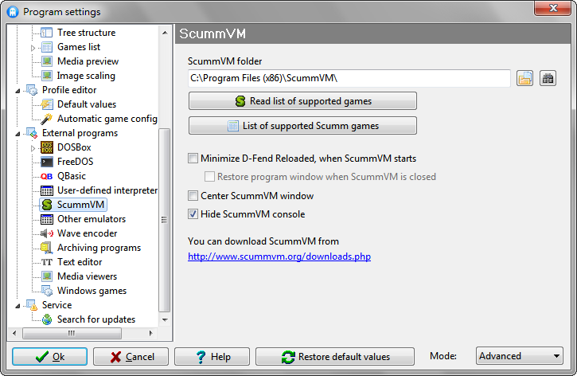
▲ 圖15 D-Fend Reloaded 可整合 ScummVM
超任模擬器遊戲
如果你還會玩超級任天堂的遊戲呢？最有名的超級任天堂模擬器大概是開放源碼的 Snes9x ，一樣可以整合到 D-Fend Reloaded 裡面，方法是在「其他模擬器」（這個選項要在進階模式中才會出現）裡面設定 Snes9x 的執行檔，別忘了在「資料檔案副檔名」填上 SMC，之後新增遊戲設定檔時，就可以在模擬類型選擇 Snes9x，並且直接選擇 .SMC 格式的 ROM 檔案當做遊戲資料檔案。
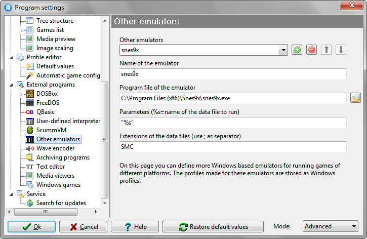
▲ 圖16 在 D-Fend Reloaded 當中設定 Snes9x
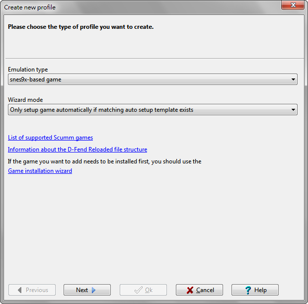
▲ 圖17 在 D-Fend Reloaded 當中新增 Snes9x 遊戲的設定檔
如果想要用其他模擬器，也是按照這樣的方法來設定（當然資料檔案的副檔名會有所不同），以便統一由 D-Fend Reloaded 來啟動各種遊戲。
壓縮格式支援
D-Fend Reloaded 可以直接「匯入」遊戲目錄的壓縮檔，這個功能實際上是在要執行遊戲時替你解壓縮，遊戲結束時再將遊戲目錄的變動更新至壓縮檔。將 D-Fend Reloaded 以「可攜帶」模式安裝至隨身碟的使用者，可望藉此提昇讀取效能。D-Fend Reloaded 內建開放源碼的 7-Zip 以及開放源碼的 DelphiZip ，因此可以處理 7z 及 ZIP 格式的壓縮檔。如果你習慣用其他的壓縮格式，或者是你手邊的遊戲檔案是以其他格式保存（DOS 年代最流行的壓縮格式應該是 ARJ 及 RAR），可以在 D-Ferd Reloaded 內任意設定不同格式的壓縮程式（這個選項要在進階模式中才會出現），如此 D-Fend Reloaded 也能延伸其支援。
D-Fend Reloaded 1.1.0 版內的 7-Zip 為 4.42 版，DelphiZip 為 1.79.10.05 版。目前 7-Zip 最新版為 9.20 版，DelphiZip 最新版為 1.9.0.0100 版。你可以自己手動更新這些元件的版本，也可以使用其他能處理 7z 及 ZIP 格式的程式，取代 D-Fend Reloaded 內建的 7-Zip 及 DelphiZip。
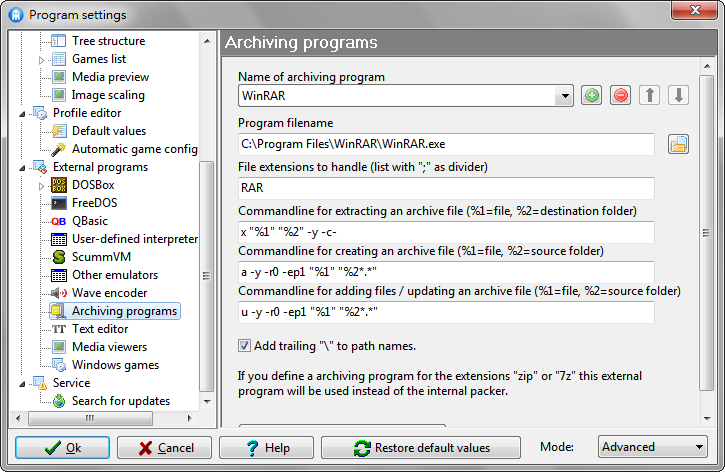
▲ 圖18 在 D-Fend Reloaded 內設置以 WinRAR 處理 RAR 格式的壓縮檔
由於 D-Fend Reloaded 對壓縮檔的處理，除了解壓縮遊戲外，也會壓縮及更新，所以設置外部壓縮程式時必須逐一設定不同用途的指令。好在 D-Fend Reloaded 已經內建了 WinRAR 、ARJ32 、UHArc 等壓縮程式的預設指令，選擇對應的執行檔後，就會自動幫你把這些指令填上。
FreeDOS、4DOS、Doszip Commander
D-Fend Reloaded 在安裝過程中可以讓你選擇安裝 FreeDOS ，這個開放源碼專案提供與 DOS 相容的作業環境，增添許多原本 DOS 所不支援的功能，例如 FAT32 檔案系統以及其他可以取代 MS-DOS 工具程式的套件。更棒的是 FreeDOS 裡面也包含了 4DOS 命令直譯器，可以大幅改善 DOS 環境中的種種使用體驗。
4DOS 最早是由 JP Software 的 Rex Conn 所開發與發行的私有軟體，後來隨著 JP Software 將業務重心轉向 Take Command，遂將 4DOS 源碼釋出及開放。附在 FreeDOS 1.0 內的 4DOS 版本為甫開放源碼時的 7.50.130 版，而 4DOS 目前的最新版本為 8.00.200 版，所以你可能會想要自己下載，覆蓋到 %UserProfile%\D-Fend Reloaded\VirtualHD\FREEDOS\ 裡面。D-Fend Reloaded 也可以直接設定要使用 4DOS 來當成預設的 DOSBox 命令直譯器，如此在 DOSBox 當中可以更有效率地操作，有更豐富的指令及環境變數。筆者手上還保留著十多年前精心調校過的 4DOS 設定檔，不但寫滿了中文註解，甚至還有當時保留下來的 4DOS 功能變數中文說明檔，歡迎有興趣的讀者朋友直接下載使用 。
此檔案解壓縮後會得到一些檔案，茲說明如下：
4ALIASES.INI：自訂指令縮寫（別名）用的設定檔，在 DOSBox 中若更動此檔案設定，只要執行「aaa」即可重新載入生效。
4DOS.INI：4DOS 的主要設定，各選項均提供中文註解。
4LICENSE.TXT：4DOS 的授權說明。
4README.TXT：4DOS 的「讀我」文件。
4START.BTM：4DOS 的自動執行檔，由 4START.SRC 編譯而來。
4START.SRC：4START.BTM 的源檔，每次更動後在 DOSBox 當中執行「BATCOMP 4START.SRC」即可編譯出對應的 4START.BTM。
4VAR.TXT：4DOS 功能變數中文說明文件。
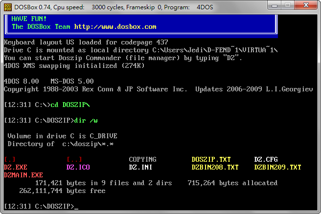
▲ 圖19 在 DOSBox 當中使用 4DOS 的彩色 DIR 指令
除了善用 FreeDOS 與 4DOS 外，D-Fend Reloaded 亦內建一套叫 Doszip Commander 的開放源碼軟體，這是類似 Norton Commander 的雙欄式檔案管理工具，能夠進行各種檔案管理及操作。D-Fend Reloaded 1.1.0 版內建的 Doszip Commander 為 2.08 版，而 Doszip Commander 目前最新的版本為 2.09 版，所以你可能會想要自己下載，覆蓋到 %UserProfile%\D-Fend Reloaded\VirtualHD\DOSZIP\ 裡面。
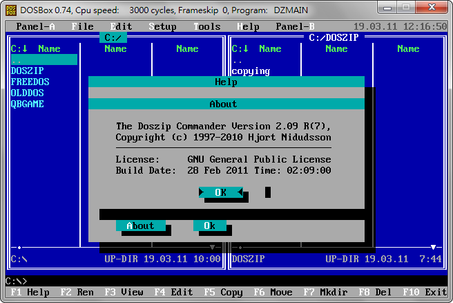
▲ 圖20 在 DOSBox 當中使用 Doszip Commander 管理檔案
D-Fend Reloaded 整合各種開放源碼專案的產物，包裝成完整而簡單易上手的介面，讓不同世代的遊戲玩家都可以從中獲得樂趣，同時又可以免除當年的種種苦痛，不但在一系列遊戲相關開放源碼計畫中顯得重要，也是筆者常說「好的預設介面，是成功的一半」的最佳例證。
除了筆者所介紹的這些，D-Fend Reloaded 還包含許多更進階的功能，例如可以在執行遊戲前將指定的光碟映像檔掛載成虛擬光碟、遊戲結束後解除掛載，或者可錄製遊戲中的畫面或聲音（並壓制成 Ogg Vorbis 格式）等，讀者朋友們不妨把玩一番，也必能從中挖掘到更多相關的開放源碼專案資訊唷！
回顧：開放源碼
本文中提及的開放源碼軟體專案及相關網站，依其出現先後順序列舉如下：
| 開放源碼軟體專案 | 相關網址 |
|---|---|
| D-Fend Reloaded | https://dfendreloaded.sourceforge.net/ |
| Wine | https://www.winehq.org/ |
| DOSBox | https://www.dosbox.com/ |
| DOSBoxGui | https://sites.google.com/site/losfinkos/dosboxgui |
| DboxFE | https://chmaster.freeforge.net/dboxfe-project.htm |
| GR-lida | https://www.gr-lida.org/ |
| PortableApps.com | https://portableapps.com/development/portableapps.com_format |
| Cheat Engine | https://www.cheatengine.org/ |
| ScummVM | https://scummvm.org/ |
| FluidSynth | https://sourceforge.net/apps/trac/fluidsynth/ |
| Snes9x | https://www.snes9x.com/phpBB2/viewtopic.php?t=4542 |
| 7-Zip | https://www.7-zip.org/ |
| DelphiZip | https://www.delphizip.org/ |
| FreeDOS | https://www.freedos.org/ |
| 4DOS | https://4dos.isgreat.org/ |
| Doszip Commander | https://sourceforge.net/projects/doszip/ |
註一：以上除了 boxer 以外，都是開放源碼專案並以公眾授權的方式向外釋出，DboxFE 原頁面因站長重新調整架構，截至本文發佈之前仍有暫時失聯的狀況（回本文）。
專欄總覽


自由軟體鑄造場 製作 最佳瀏覽狀態：IE7或Firefox2.0以上 (建議使用Firefox) ‧ 解析度1024*768
E-Mail：contact@openfoundry.org Address：台北市南港區研究院路2段128號 中央研究院資訊科學研究所 . 隱私權條款. 使用條款
E-Mail：contact@openfoundry.org Address：台北市南港區研究院路2段128號 中央研究院資訊科學研究所 . 隱私權條款. 使用條款